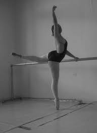
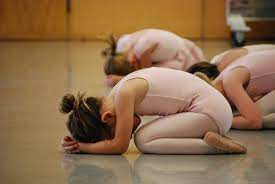

El máximo punto de la pirámide de actitud escénica. En ciertas ocasiones es el menos comprendido; sin embargo, es el que sintoniza a los bailarines en su actuación. Este es la capacidad que se tiene hacia una cosa en un largo periodo de tiempo.

Intensidad
Es cuando llega la hora de actuar, refiriéndose al grado de preparación psicológica que tendrá el bailarín al momento previo de su actuación. Esta se caracteriza por las diversas evoluciones que presentarán en el estado fisiológico, como lo son los latidos del corazón, presión sanguínea, producción de adrenalina e incluso miedo. Los bailarines la pueden presenciar de una manera tanto positiva como negativa.
